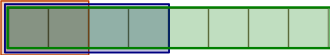
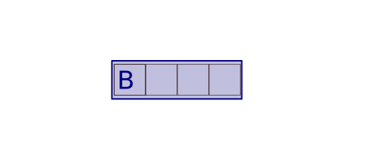

<!doctype html>
<html>
	<head>
		<meta charset="utf-8">
		<meta name="viewport" content="width=device-width, initial-scale=1.0, maximum-scale=1.0, user-scalable=no">

		<title>reveal.js</title>

		<link rel="stylesheet" href="css/reveal.css">
		<link rel="stylesheet" href="css/theme/black.css">

		<!-- Theme used for syntax highlighting of code -->
		<link rel="stylesheet" href="lib/css/zenburn.css">

		<!-- Printing and PDF exports -->
		<script>
			var link = document.createElement( 'link' );
			link.rel = 'stylesheet';
			link.type = 'text/css';
			link.href = window.location.search.match( /print-pdf/gi ) ? 'css/print/pdf.css' : 'css/print/paper.css';
			document.getElementsByTagName( 'head' )[0].appendChild( link );
		</script>
	</head>
    <body>
        <div class="reveal">
            <div class="slides">
                <section data-markdown=""
                         data-separator="^====+$"
                         data-separator-vertical="^----+$"
                         data-notes="^Note:">
                <script type="text/template">

## strict variant
### A simpler variant in C++
### Chris Beck

<span class="fragment fade-in">
https://github.com/cbeck88/strict_variant
</span>

==============================================================================

## What is a variant?

* A variant is a <i>heterogenous container</i>.

  * `std::vector<T>` <br>
    <span style="color:red">many</span> objects of <span style="color:green">one</span> type.
  *  `std::variant<T,U,V>` <br>
     <span style="color:green">one</span> object of <span style="color:red">any</span> of `T`, `U`, or `V`.

* AKA "tagged union", "typesafe union".

==============================================================================

## What is a union?

```c++
struct bar {      // Size is sum of sizes,
  short a;        // plus padding for alignment
  float b;
  double c;
};
```


```c++
union foo {       // Size is max of sizes
  short a;        // Alignment is max of alignments
  float b;
  double c;
};
```



==============================================================================

```c++
union foo {
  short a;
  float b;
  double c;
};

int main() {
  foo f;
  f.a = 5;
  f.a += 7;
  
  f.b = 5;
  f.b += .5f;
}

```

Storing may change the <i>active member</i>.

Reading inactive member may lead to implementation-defined or undefined behavior!

==============================================================================

## Why would you use this?

* Need to store several types of objects in a collection, but no natural inheritance relation.

* Using an array of unions, store objects of several types <i>contiguously</i> and with
  <i>very little memory wasted</i>.

  * Low-level signals / event objects.
  * Messages matching various schema.

==============================================================================

```c++

struct SDL_KeyboardEvent {
  Uint32 type;       // Event type: SDL_KEYDOWN or SDL_KEYUP
  Uint8 state;       // SDL_PRESSED or SDL_RELEASED
  SDL_Keysym keysym; // Represents the key that was pressed
}; 

struct SDL_MouseMotionEvent {
  Uint32 type;       // Event type: SDL_MOUSEMOTION
  Uint32 state;      // bitmask of the current button state
  Sint32 x;
  Sint32 y;
};

union SDL_Event {
  SDL_WindowEvent window;
  SDL_KeyboardEvent key;
  SDL_MouseMotionEvent motion;
  ...
};

// Example:

void poll_input() {
  SDL_Event test_event;
  while (SDL_PollEvent(&test_event)) {
    switch(test_event.type) {    // .type is the "tag"
      case SDL_MOUSEMOTION: { ... }
      case SDL_KEYDOWN: { ... }
      ...
    }
  }
}
```

==============================================================================

## Why would you use this?

* A variant is a type-safe alternative to a union.
* Prevents you from using inactive members.
* Makes sure destructors get called when the active member changes -- crucial for C++!

==============================================================================

Query the current member using `get`:

```c++

void print_variant(boost::variant<int, float, double> v) {
  if (const int * i = boost::get<int>(&v)) {
    std::cout << *i;
  } else if (const float * f = boost::get<float>(&v)) {
    std::cout << *f;
  } else if (const double * d = boost::get<double>(&v)) {
    std::cout << *d;
  } else {
    assert(false);
  }
}
```

-----

Better, use a <i>visitor</i>:

```c++
void print(double d) {
  std::cout << d;
}


void print_variant(boost::variant<int, float, double> v) {
  boost::apply_visitor(print, v);
}
```

<span class="fragment fade-in">
This call only works because `int`, `float` can be promoted to `double` as part of overload resolution.
</span>

-----

Using a lambda as a visitor (C++14):

```c++
void print_variant(boost::variant<int, float, double> v) {
  boost::apply_visitor([](auto val) {
                          std::cout << val;
                       }, v);
}
```

<span class="fragment fade-in">
No promotion here! More generally, use templates to customize behavior for specific types.
</span>

==============================================================================

## Recursively-defined data structures (XML)

```c++
struct mini_xml;

using mini_xml_node =
  boost::variant<boost::recursive_wrapper<mini_xml>,
                 std::string>;

struct mini_xml {
  std::string name;
  std::vector<mini_xml_node> children;
};
```

==============================================================================

## Pattern matching (Rust)

```rust
enum Message {
    Quit,
    ChangeColor(i32, i32, i32),
    Move { x: i32, y: i32 },
    Write(String),
}

fn quit() { /* ... */ }
fn change_color(r: i32, g: i32, b: i32) { /* ... */ }
fn move_cursor(x: i32, y: i32) { /* ... */ }

fn process_message(msg: Message) {
    match msg {
        Message::Quit => quit(),
        Message::ChangeColor(r, g, b) => change_color(r, g, b),
        Message::Move { x, y: new_name_for_y } => move_cursor(x, new_name_for_y),
        Message::Write(s) => println!("{}", s),
    };
}
```

==============================================================================

## Pattern matching (C++)

```c++
using Message = boost::variant<Quit, ChangeColor, Move, Write>;

void quit();
void change_color(int r, int g, int b);
void move_cursor(int x, int y);

void process_message(const Message & msg) {
  boost::apply_visitor(
    overload([](Quit q) { quit(); },
             [](ChangeColor c) { change_color(c.r, c.g, c.b); },
             [](Move m) { move_cursor(m.x, m.y); },
             [](Write w) { std::cout << w.s << std::endl; }),
    msg);
}
```

==============================================================================

## Existing implementations

* `boost::variant`
* `std::variant` (C++17)
* `strict_variant` (this talk)
* and others...

Many significant design differences and tradeoffs!

==============================================================================

## Problem: Exception safety

How to handle <i>throwing</i>, <i>type-changing</i> assignment




=============================================================================

## "Double Storage" Solution

(illustration of double storage)

==============================================================================

## `boost::variant` solution

(illustration of boost::variant)

==============================================================================

## `std::variant` solution

(illustration of std::variant)

==============================================================================

## Tradeoffs

Because of C++ language rules, we can't have everything we want:

* No wasted memory
* No empty state
* Strong exception-safety, rollback semantics
* No dynamic allocations, backup copies

==============================================================================

## `strict variant` solution

(illustration of strict_variant)

==============================================================================

## `strict variant` implementation

High level design: Reducing to a simpler problem

1. Make a "simple" variant which assumes its members are nothrow moveable.

2. Then, make a general variant -- stick anything that throws in a `recursive_wrapper` and then use the simple code.

----------------

```c++
struct <typename T, typename = std::enable_if_t<std::is_nothrow_destructible<T>::value && !std::is_reference<T>::value>>
struct wrap_if_throwing_move {
  using type = typename std::conditional<std::is_nothrow_move_constructible<T>::value,
                                         T,
                                         recursive_wrapper<T>>::type;
};

template <typename T>
using wrap_if_throwing_move_t = typename wrap_if_throwing_move<T>::type;


template <typename... Ts>
using variant = simple_variant<wrap_if_throwing_move_t<Ts>...>;
```

==============================================================================

|                  | Empty State   | Exception Safety | Backup Copies | No. of object states
| -------------    |:-------------:| ---------- -----:| -------------:| :-------------------------------------------------------
| double storage   | no            |              yes | no            | `2n`
| `std::variant`   | yes           |               no | no            | `n+1`
| `boost::variant` | no            |              yes | yes           | `2n`
| `strict_variant` | no            |              yes | no            | `n`


==============================================================================

## Why use `strict variant` instead of `boost::variant`?

* `boost::variant` needs to support even C++98.

* This means, `boost::variant` has to basically work even if we can't check `noexcept` status of operations. This greatly limits the design options.
  
* `strict_variant` targets C++11, so it can rely on having this feature.
  Allows an, IMO, better and simpler strategy.

==============================================================================

## Fixes for "implicit conversion" issue.

==============================================================================


# Thank you

<span class="fragment fade-in">
http://chrisbeck.co <br>
http://github.com/cbeck88
</span>


                </script>
                </section>
            </div>
        </div>


		<script src="lib/js/head.min.js"></script>
		<script src="js/reveal.js"></script>

		<script>
			// More info about config & dependencies:
			// - https://github.com/hakimel/reveal.js#configuration
			// - https://github.com/hakimel/reveal.js#dependencies
			Reveal.initialize({
				dependencies: [
					{ src: 'plugin/markdown/marked.js' },
					{ src: 'plugin/markdown/markdown.js' },
					{ src: 'plugin/notes/notes.js', async: true },
					{ src: 'plugin/highlight/highlight.js', async: true, callback: function() { hljs.initHighlightingOnLoad(); } }
				]
//				width:  '100%'
//				height: '100%'
			});
		</script>
	</body>
</html>
